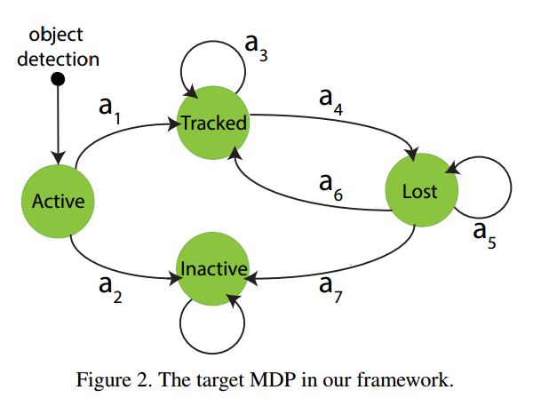
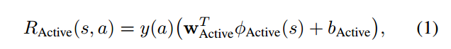
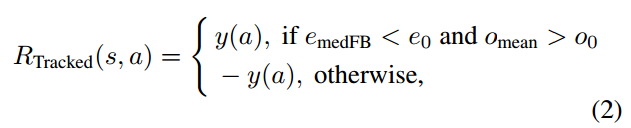
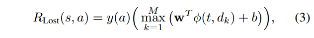
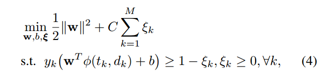
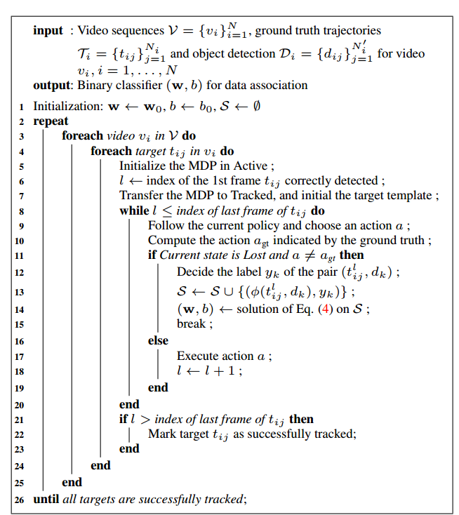
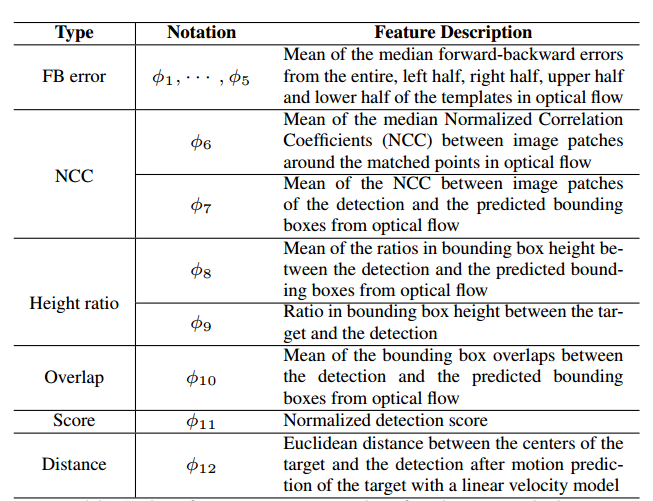
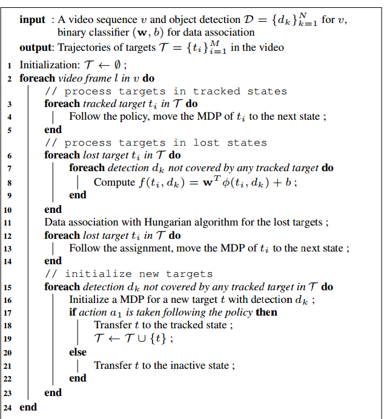

对于在线上模式进行跟踪-检测，最大的挑战是如何将在现在的视频框架中有噪声的物体检测与先前的跟踪的物体联系起来。
我们规划线上多物体跟踪问题为马尔科夫决策过程，其中一个物体的存在时间被用一个MDP建模，而多 MDPs 被组装用来多物体跟踪。为数据关联学习一个相似度函数和为MDP学一个策略是等价的。
3.在线多物体追踪框架
3.1马尔科夫过程
MDP 包含 \((\mathcal{S}, \mathcal{A}, \mathcal{T(), \mathcal{R()}})\) :
s \(\in\) \(\mathcal{S}\) 编码目标的状态
\(a \in \mathcal{A}\) 可以施加给目标的动作
\(\mathcal{T}\) 状态转移函数
\(\mathcal{R}\) 实值奖励函数

当一个物体被物体检测器检测到了，它进入“活跃”状态，一个活跃物体可以转移到被追踪和失活。
一个被追踪的目标可以保持被追踪，也可以转变为失踪如果它由于一些原因而无法被摄像头捕捉到。
一个失踪物体可以保持失踪，或者变回被追踪如果它重新出现，或者变为失活如果它失踪了很长时间。
失活是任何目标的最终状态。
动作和转移函数：7个可能的转移动作，例如\(\mathcal{T(s_{Tracked}, a_4)=s_{Lost}}\)
奖励函数：在这篇论文中的MDP,奖励函数没有被给出，而是需要从训练数据中学习，我们使用目标的真实轨迹作为监督。
3.2 策略
在MDP中，策略是一个从状态空间到到动作空间的映射，给定当前目标的状态，策略决定了选择哪个动作，策略学习的目标是找到一个最大化总奖励的策略。
3.2.1 活跃状态中的策略
在一个活跃状态中，MDP在转移一个物体检测到被追踪还是失活中做决策，非最大化抑制和阈值检测通常被使用，我们训练一个二分类SVM，使用一个标准化的5D 特征向量 \(\phi_{Active}(s)\) （2D坐标，高度，宽度，检测的得分）离线分类一个检测到被追踪还是失活

如果 \(a=a_1, y(a)=1;a=a_2,y(a)=-1\)
需要注意的是从物体检测器中来的一个误警可能仍然被误分类并转移到被跟踪状态，这个我们会在MDP在被跟踪和失踪状态中解决。
3.2.2 被追踪状态中的策略
在该状态下，MDP需要决定是否继续追踪还是转移到一个失踪状态，只要目标不是被挡住或者还在摄像机的视野范围，我们都应当保持追踪，否则它应该被标记为失踪，这一决策与单物体追踪的目的有关联，我们为目标线上建立一个表示模型并使用它来追踪这个目标。
- 模板表示：目标的外观仅由一个模板所表示，该模板是目标的一个图像块。当物体检测被转移到一个被追踪的目标，我们给这个目标模板初始化一个边界框，当一个目标被追踪，MDP收集在被追踪帧中它的模板们来表示这个目标的历史，这会被用在失踪状态中的决策。
- 模板追踪：为了使用目标模板来追踪，我们计算从模板内密集且均匀采样点到新的视频帧的光流，给定一个点 \(\mathrm{u} =(u_x, u_y)\) 在目标模板 \(I\) 中，我们发现它在下一帧 \(J\) 中的相应的位置 \(\mathrm{v}=\mathrm{u}+\mathrm{d}=(u_x+d_x,u_y+d_y)\) （用的是Lucas-Kanade method with pyramids）,这里 \(\mathrm{d}=(d_x,d_y)\) 是在 u 处的光流，在计算所有采样点的光流后，我们使用前向-后向错误(FB error)来衡量这个预测有多稳定。
$$
e(\mathrm{u})=||\mathrm{u}-\mathrm{u’}||^2 \
\
e_{medFB} = median(\{e(\mathrm{u_i})\}_{i=1}^n)
$$
如果\(e_{medFB}\)大于一些阈值，追踪就被认为不稳定，如果不稳定的话，我们可以为目标预测一个新的边界框，这可以用来当做目标的新位置。
但是仅用光流来决策是危险的，因为被追踪的目标可能是从物体检测器来的一个误警，直觉是一个误警不可能被连续检测到，如果一个被追踪的目标在一段时间内没有遇到物体检测，它可能是一个误警，所以我们检测目标的历史并计算边界框在目标 \(t_k\) 在 之前第k个帧中和相应的检测 \(\mathcal{D}_k\) 的重叠 \(o(t_k, \mathcal{D_k})\)，我们计算 \(o_{mean}=mean(\{o(t_k,\mathcal{D_k})\}_{k=1}^K)\) 当做另外一个做决策的准则。
我们用特征表示 \(\phi_{Tracked}(s)=(e_{medFB}, o_{mean})\)定义奖励函数 :

\(y(a)=+1, a=a_3;y(a)=-1,a=a_4\)
- 模板更新：目标的外观模型需要被更新来适应外观的改变，在MDP中，我们采用一个懒惰的更新规则并借助物体检测器来阻止追踪漂移。当模板因为外观变化而不能追踪目标，MDP转移这个目标到失踪状态。当目标从失踪转移到被追踪，“追踪模板”被相关的检测替换。同时我们保存 K 个模板当做模板被追踪的历史，“追踪模板” 是这 K 个模板中的一个，但是由于我们的懒惰更新规则，可能不是最新的那个，这 K 个模板在失踪状态被用来做数据关联。
3.2.3 失踪状态中的策略
在失踪状态，MDP 需要决定是否保持目标为失踪，还是转移到被追踪，还是标记它为失活。如果一个失踪的目标失踪超过\(T_{Lost}\) 帧，那么我们就标记它为失活。为了转移一个失踪目标到被追踪状态，这个目标需要被来自物体检测器中的检测之一所关联，否则它就被保持为失踪。
- 数据关联：t 表示一个失踪物体，d 是一个物体检测，我们的目的是预测 (t, d)的 label \(y \in \{+1, -1\}\)，表明这个物体被关联到这个检测（y=+1）还是没有(y=-1)。我们使用一个实值线性函数 \(f(t,d)=\mathrm{w}^T \phi(t,d)+b\) 来做二分类，其中 \(\phi(t,d)\) 是捕捉目标和检测的相似度的特征向量，与奖励函数有关的特征表示 \(\phi_{Lost}(s)=\{\phi(t,d_k)\}_{k=1}^M\) 被定义为：

\(y(a)=1, a=a_6;y(a)=-1,a=a_5\), k 表明 用于关联的M 个潜在的检测。
- 强化学习：在 MDP中我们用强化学习来训练二分类器，\(\mathcal{V}=\{v_i\}_{i=1}^N\) 表示用于训练的一组视频序列，N 是序列的数量，假定在视频\(v_i\)中有 \(N_i\) 个真实目标\( \Gamma_i=\{t_{ij}\}_{j=1}^{N_i}\)，我们的任务就是训练MDP使得它能够正确的追踪所有目标。我们开始训练从一个初始权重\((\mathrm{w_0},b_0)\) 和一个空训练集 \(S_0=\emptyset\)，二分类器或者策略只有在MDP出错时才会更新。假定MDP在视频 \(v_i\) 中追踪第 j 个目标 \(t_{ij}\)，在视频的第 l 帧，它处于失踪状态， 我们考虑两种错误：
i) MDP 关联目标 \(t_{ij}^l\) 到 目标检测 \(d_k\) ，如果根据真实数据这是错误的，那么\(\phi(t_{ij}^l, d_k)\) 被添加到训练集 \(S\) 作为负例。
ii) MDP决定不关联目标到任何检测，但是这个目标是可见的而且被检测 \(d_k\) 正确检测的（根据真实数据），那么\(\phi(t_{ij}^l, d_k)\) 被添加到训练集 \(S\) 作为正例。
在训练集被增强之后，我们通过在新的训练集上的再训练更新这个二分类器。给定当前训练集\(S=\{\phi(t_k, y_k),d_k\}_{k=1}^M\),我们解决下列软间隔 优化问题来获得一个最大间隔分类器：

当分类器被更新，我们就得到一个新的策略 用于训练过程的下一次迭代，我们保持迭代和更新策略，直到所有的目标都被正确追踪。
二分类器数据关联的强化学习算法：

- 特征表示：我们的强化学习算法的优点是它是通用的而且让我们设计并利用基于目标的历史状态的特征。特征向量 \(\phi(t,d)\) 编码了目标t 和 检测 d 之间的相似度。首先，目标的历史记录被在之前 K 个帧中的 K 个模板所表示。其次，给定物体检测 d，我们计算从每个模板到检测的光流但是限制了光流的目的地在检测的边界框的周围，然后我们衡量从不同方面的光流的质量并使用这些标准当做特征

3.3 用 MDPs 多物体追踪
我们给每个物体一个 MDP，并且它根据已经学得的策略来追踪物体。给定一个新的输入视频帧，被追踪的目标首先被处理看它是否保持被追踪还是转移到失踪，然后我们成对计算失踪物体和物体检测之间的相似度，这里采用了非最大值抑制来抑制被遮盖的检测，相似度的分数被用来做数据关联的二分类器计算，然后相似度分数被用来在Hungarian algorithm 中获得检测和失踪目标的分配，根据这个分配，在关联到一些物体检测的失踪目标被转移到被追踪状态，否则它们继续保持失踪。最后我们对每一个没有被任何追踪目标包括到的物体检测初始化一个 MDP。需要注意的是在追踪中，被追踪目标比失踪目标有着更高的优先级。
用 MDPs 多物体追踪算法：
